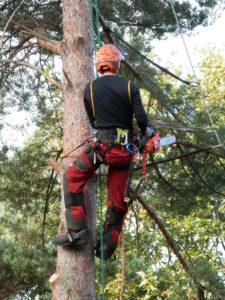

Alpinistyka przemysłowa i prace wysokościowe
PRA świadczy usługi polegające na pracy na dużych wysokościach z użyciem techniki dostępu linowego i alpinistyki przemysłowej. Gwarancją wysokiej jakości i bezpieczeństwa wykonywanych prac są przede wszystkim doświadczeni pracownicy, a ponadto najnowocześniejszy atestowany sprzęt alpinistyczny, dzięki któremu jesteśmy w stanie sprostać pracom na wszelkich możliwych wysokościach. W ramach naszej oferty podejmujemy się zleceń w zakresie mycia i konserwacji elewacji i powierzchni szklanych, jak również wszelkich prac montażowych, instalacyjnych, malowania, wycinki i pielęgnacji drzew, aż po zbijanie sopli i odśnieżanie dachów. PRA podejmuje się również prac nieuwzględnionych w ofercie dostosowanych do potrzeb klientów, dlatego prosimy o indywidualny kontakt e-mailowy, telefoniczny.
Zapraszamy do kontaktu !
